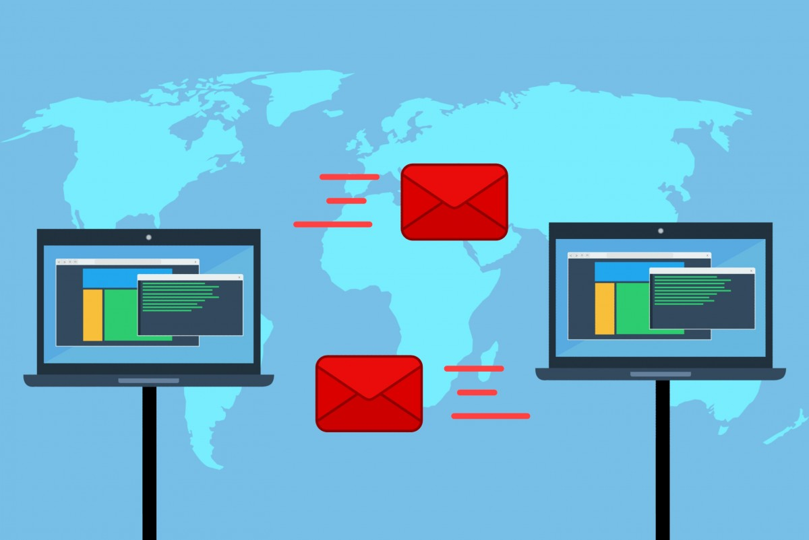

Mengenal Jurusan Sistem Informasi dan Apa Saja yang Dipelajari
Jumat, 09 Juli 2021

Saat ini, teknologi informasi mendominasi kebutuhan manusia, SDM yang ahli di bidang ini sudah pasti juga sangat dicari. Salah satu bidang ilmu tersebut adalah sistem informasi yang mempelajari cara membuat dan mengoperasikan perangkat keras dan lunak tertentu untuk berinteraksi dengan data. Sistem informasi juga meliputi studi tentang mengumpulkan, menyaring, dan mendistribusikan data.
Jika kamu akan memasuki bangku kuliah atau ingin melanjutkan kuliah di bidang sistem informasi, saat ini sudah banyak perguruan tinggi di Indonesia yang memiliki program studi S1 dan juga beberapa program studi S2. Untuk kamu ingin berkuliah di jurusan ini, sebaiknya kamu mengetahui apa saja yang dipelajari dan nanti kerja apa?
Mengenal sistem informasi
Pengertian sederhana, jurusan Sistem Informasi adalah gabungan dari Ilmu Komputer, Ekonomi Manajemen, dan Bisnis. Fokusnya tetap di bidang software (programming), tapi lebih ke arah penerapan ke bisnis perusahaan. Oleh karena itu tidak heran banyak mata kuliah ‘berbau’ ekonomi manajemen di jurusan ini.
Apa saja yang dipelajari di Sistem Informasi?
Sebagai rujukan untuk mata kuliah Sistem Informasi, saya akan menggunakan mata kuliah Sistem Informasi dari Universitas Mathla'ul Anwar banten.
Untuk kampus-kampus lain, mungkin ada beberapa variasi mata kuliah, tapi tidak akan jauh berbeda dengan kurikulum di Sistem Informasi UNMA Banten berikut ini:
Semester 1:
- Pendidikan Agama
- Manajemen & Organisasi
- Wawasan Kebangsaan
- Sistem dan Teknologi Informasi
- Matematika Diskrit
- Bahasa Pemrograman
Jurusan sistem informasi nanti kerja apa?
Dengan menekankan segi analisis bisnis dan manajemen, lulusan Sistem Informasi sangat cocok untuk masuk sebagai ahli IT di perusahaan. Kemampuan menggabungkan bisnis dengan programming sering menjadi kendala bagi seorang programmer yang lebih fokus ke sisi teknis seperti lulusan Teknik Informatika maupun Ilmu Komputer.
-
Business Analyst
Seiring dengan meningkatnya aplikasi IT dalam bisnis, maka Business Analyst juga semakin dibutuhkan. Keberadaan seorang Business Analyst sangat penting, salah satunya menjadi penghubung antara manajemen dengan pemegang saham serta antara tim IT dengan user.
-
Web Developer
Seorang membuat program aplikasi untuk suatu website. Web Developer-lah yang membuat website dari nol hingga tampilannya menarik dan setiap fungsinya dapat digunakan. Profesi ini memang lebih dekat dengan sisi IT dalam Sistem Informasi.
-
Project Manager
Kembali pada sisi bisnis, Project Manager adalah penggerak seluruh anggota tim pada suatu proyek. Pada posisi yang lebih strategis, peran seorang Project Manager sangat menentukan keberlangsungan hidup suatu perusahaan.
-
E-Commerce System Developer
Tugas seorang E-commerce System Developer cukup kompleks, meliputi alur sistem, tingkat keamanan, hingga UI dan UX sistem e-commerce perusahaan. Bila profesi ini adalah cita-citamu, bangun dan kembangkan kecakapanmu untuk bekerja dalam tim sejak sekarang.
-
. IT Manager
Untuk menduduki jabatan sebagai IT Manager, kamu haruslah memiliki kemampuan manajemen yang baik. Your job will be planning, coordinating, and directing activities related to computer and information system of a company. Instalasi dan maintenance pada hardware, software, hingga network perusahaan menjadi tanggungjawab IT Manager.
-
Database Administrator
Tugas seorang Database Administrator adalah mengelola dan merapikan data perusahaan. Di Amerika Serikat, profesi ini mengalami peningkatan sebesar 11% sejak 2014 hingga 2024. Data yang disebutkan oleh Bureau of Labor Statistics ini melebihi rata-rata peningkatan profesi yang lain.
-
System Analyst
Meskipun sering tumpang tindih, System Analyst berbeda dari Business Analyst. Seorang System Analyst lebih terfokus pada sistem IT, misalnya mengelola aplikasi, membuat spesifikasi yang digunakan oleh programmer, maupun mengidentifikasi apa saja kebutuhan user agar sistem yang dikembangkan nantinya sesuai.
-
IT Consultant
Ingin bekerja dibidang pelayanan? Nah, barangkali profesi IT Consultant akan sesuai untukmu kelak. Seorang IT Consultant biasanya membantu klien yang ingin menggunakan IT. IT Consultant juga membantu perusahaan dalam meningkatkan struktur dan efisiensi sistem IT-nya.
-
System Engineer
Bila kamu memiliki minat pada sesuatu yang kompleks, profesi System Engineer mungkin menarik untukmu. Tugas seorang System Engineer memang mendesain dan mengatur sistem yang kompleks. System Engineering sendiri merupakan bidang interdisipliner yang menggabungkan rekayasan dan manajemen rekayasan – kompleks, bukan?
-
Information System Manager
Sebagai seorang Information System Manager, kamu kelak akan mengendalikan sistem agar dapat mendukung proses bisnis perusahaan. Lebih dikenal sebagai IS Manager, tugas profesi ini mencakup perencanaan, instalasi, dan maintenance, termasuk menangani upgrade pada hardware dan software.
-
Network Security
Dari namanya saja, kamu sudah dapat menebak bahwa profesi ini berkaitan dengan keamanan jaringan. Di negara-negara maju saat ini profesi Network Security merupakan salah satu dari enam jenis pekerjaan dibidang cybersecurity dengan bayaran paling tinggi. Berminat?
Programmer